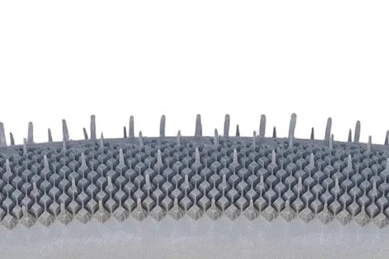
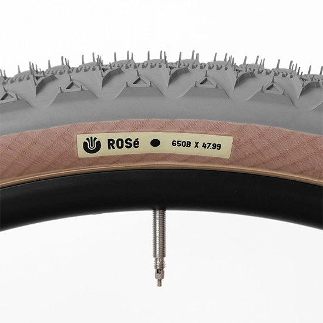
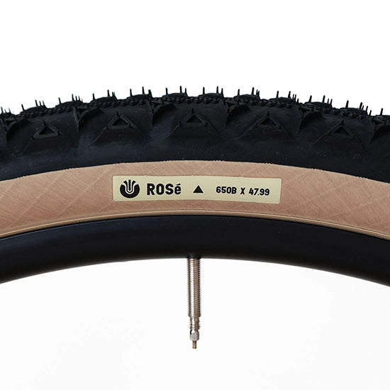
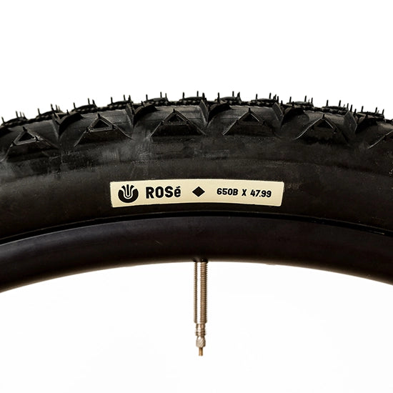
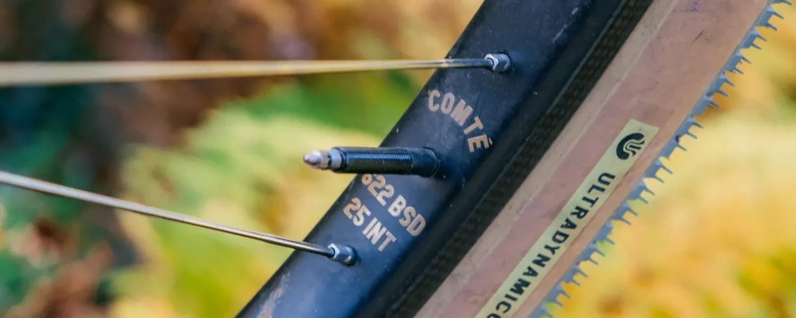

마이크로 트라이앵글
삼각형은 이 차원에서 가장 튼튼한 도형입니다. 작은 삼각형이 촘촘히 모여 구름성과 그립의 균형을 만듭니다.
01
Brand
UltradynamicoUSA · Made in Japan
Ultradynamico(울트라다이나미코)는 오랜 친구이자 스스로를 '타이어 페티시스트'라 부르는 론(Ron, 울트라로맨스)과 팻(Pat, 울트라트래디션)이 만든 미국의 타이어 브랜드입니다. 두 사람은 자전거를 쓸모와 예술적 디자인이 만나는 물건이라고 생각합니다. 그래서 타이어도 달리는 성능과 보기 좋은 모습이 똑같이 중요하다고 믿습니다.
둘이 합쳐 50년 가까이 타이어를 들여다본 끝에, 요란한 로고와 이상한 트레드 패턴, 지나치게 두껍고 생기 없는 케이싱에 지쳐버렸습니다. 사방을 달려본 경험과 고급 타이어에 대한 애정, 디자인 감각에 '초등학교 3학년 수준의 과학'을 조금 더해 직접 만들기로 했습니다. 창업 자금은 오래 잊고 지낸 주식을 정리한 돈이었습니다.

Design
타이어는 자전거의 인상을 가장 크게 바꾸는 부품입니다. Ultradynamico는 은은한 앰버 스킨월과 단정한 라벨, 기하학적인 트레드로 빌드의 분위기를 완성하고, 높은 TPI의 유연한 케이싱으로 노면을 부드럽게 읽어냅니다. 자전거는 그 사람의 성격이 드러나는 물건이고, 라이딩 스타일은 마음을 들여다보는 창이라는 것이 이들의 생각입니다.
모델 이름은 모두 와인에서 가져왔습니다. 카탈루냐의 스파클링 와인 카바, 드라이한 스파클링 브뤼, 로제, 그리고 시칠리아의 주정강화 와인 마르살라에서 온 마르스. 이름은 장난스럽지만 타이어는 진지합니다.

가장 매끈한 카바부터 노브가 깊은 마르스까지. 네 가지 트레드는 잔이 채워지듯 순서대로 깊어집니다.

케이싱은 타이어의 뼈대이자 심장입니다. 승차감과 생동감, 개성이 모두 여기서 나옵니다.

사이드월의 색은 로트마다 조금씩 다릅니다. 와인처럼, 같은 이름 안에서도 빛깔이 달라지는 케이싱입니다.

낮은 공기압으로 더 빠르고, 더 편하고, 더 잘 붙는 타이어. 튜블리스로 세팅하면 진가가 드러납니다.


Founders · Ron & Pat
“처음엔 세상에 없던 타이어 하나를 만들고 싶었을 뿐입니다. 아무도 원하지 않더라도, 우리 둘은 평생 쓸 수 있으니까요.”
론은 '울트라로맨스(Ultraromance)'라는 이름으로 더 잘 알려진 라이더입니다. 느긋한 바이크패킹과 어드벤처 라이딩 문화를 알린 인물로, 미국 코네티컷강 하류의 300년 된 농장 헛간에 작업실을 두고 있습니다. 그 헛간이 Ultradynamico 타이어의 창고이기도 합니다. 그가 디자인한 다른 자전거 부품은 대부분 크러스트 바이크(Crust Bikes)를 통해 세상에 나옵니다.
팻은 '울트라트래디션(Ultratradition)'으로 불리는 론의 오랜 친구입니다. 두 사람은 2000년대 텍사스 오스틴에서 로드 레이싱 팀 '울리 매머드(Wooly Mammoth)'를 함께 만들며 달렸고, 오랜 시간 타이어에 까다로운 취향을 공유해왔습니다.
2018년 무렵 시작한 작업은 이듬해 첫 타이어 로제로 세상에 나왔습니다. 트레드와 노브는 두 사람이 좋아하던 타이어의 장점과 라이더들의 피드백을 모아 처음부터 직접 그렸고, 생산은 일본의 파나레이서가 맡습니다.
론 (Ultraromance), Ultradynamico 공동 창립자Ultradynamico
The Range
잔이 채워질수록 트레드는 깊어집니다. 노면과 자전거에 맞는 한 가지를 고르세요.
슬릭에 가까운 3D 다이아몬드 파일 트레드. 빠른 그래블과 올로드, 700C x 33은 클래식 로드까지.
촘촘한 마이크로 트라이앵글. 포장도로에선 매끄럽고 흙길에선 카바보다 조금 더 뭅니다.
Ultradynamico의 첫 타이어이자 라인업의 중심. 연속 센터 트레드와 델타 노브.
라이더가 디자인한 가장 깊은 트레드. 마르고 느슨한 코너와 싱글트랙을 위한 ATB 타이어.
02
All-road · Gravel
Cava카바
카바는 볼륨 큰 슬릭 타이어의 공짜 속도를 원하지만, 느슨한 코너에서는 조금 더 예측 가능한 타이어가 필요한 라이더를 위한 미니멀 트레드입니다. 3D 다이아몬드 파일 트레드가 잔자갈 노면을 고르게 쓰다듬어, 슬릭보다 체감상 20~30% 더 많은 트랙션을 냅니다.
중앙에 끊김 없이 이어지는 델타 패턴이 구름 저항을 줄이고, 진짜 슬릭보다 트레드가 찢어질 걱정도 적습니다. 앞에 노브가 깊은 로제나 마르스를, 뒤에 카바를 쓰는 조합도 좋습니다. 700C x 33은 플랑드르의 자갈길과 짧은 비포장 구간을 위한, 그래블이 아닌 로드 클래식 타이어입니다.


잘게 나뉜 다이아몬드 패턴이 잔자갈을 부드럽게 눌러 잡습니다. 슬릭의 구름성은 그대로, 그립은 체감상 20~30% 더.
중앙에 이어지는 델타 패턴이 직진에서 속도를 지키고, 기울였을 때는 예측 가능한 접지를 만듭니다.
얇고 가볍고 아주 빠른 로드 클래식 타이어. 튜블리스 최대 60psi, 그 이상은 라텍스 튜브를 권합니다.
700C 33·39·42부터 650B 47.99, 27.5인치와 26인치까지. 로드에서 클래식 MTB 리빌드까지 고를 수 있습니다.
Cava · Grey, Green / Black, Red앰버 스킨월


03
Fast · Dry
Brut브뤼
브뤼는 빠르고 마른 노면을 생각하며 만든 트레드로, 깊이는 카바와 로제의 중간입니다. 포장도로에서는 매끄럽게 구르면서도 흙길에서는 카바보다 조금 더 물어주는 타이어가 목표였습니다.
촘촘하게 배치한 마이크로 트라이앵글이 아스팔트 위에서는 반짝이듯 가볍게 구르고, 싱글트랙으로 기울이면 믿음직한 제동 트랙션과 그립을 냅니다. 사이드월 아래까지 트레드 고무를 내려, 가장 가볍고 유연한 레이스 케이싱의 승차감을 해치지 않으면서 약간의 보호를 더했습니다. 단맛이 거의 없다는 브뤼라는 이름과 달리, 아주 달콤한 타이어입니다.
삼각형은 이 차원에서 가장 튼튼한 도형입니다. 작은 삼각형이 촘촘히 모여 구름성과 그립의 균형을 만듭니다.
트레드 고무를 사이드월까지 연장해 돌과 가지에 쓸리는 부분을 조금 더 지켰습니다. 무게와 유연함은 거의 그대로입니다.
드롭바 MTB와 빅 타이어 그래블 바이크를 위한 29인치 단일 사이즈. 레이스 케이싱 580g입니다.
Brut · Grey앰버 스킨월


04
Gravel · All-terrain
Rosé로제
로제는 Ultradynamico의 첫 타이어이자 지금도 라인업의 중심입니다. 숙련된 연주자가 스트라디바리우스를 다루듯 포장도로와 흙길을 모두 능숙하게 다룹니다. 거의 끊기지 않는 센터 트레드가 추진력을 만들고, 델타 노브는 그래블로 다시 들어설 때의 제동 트랙션을 책임집니다.
약 1,000km를 달리면 트레드 아래 숨어 있던 파일 패턴의 언더트레드가 드러납니다. 시간이 지날수록 오히려 빨라지는 타이어입니다. 앞뒤 모두 로제로 오프로드 트랙션을 높이거나, 뒤를 카바로 바꿔 코너에서 조금 더 미끄러지듯 즐길 수 있습니다.
중앙이 거의 이어져 있어 포장도로에서 구름이 매끄럽고, 페달링의 힘이 그대로 앞으로 나아갑니다.
삼각형 노브가 흙길과 자갈에서 제동 트랙션을 냅니다. 포장에서 비포장으로 넘어가는 순간이 편안합니다.
노브가 닳으면 아래의 파일 패턴이 드러납니다. 오래 탈수록 더 빨라지는 이유입니다.
로제 둘로 오프로드 그립을, 뒤에 카바를 더해 코너의 경쾌함을. 앞뒤 조합으로 성격을 바꿉니다.
Rosé · Grey앰버 스킨월


Pair it
Ultradynamico의 타이어는 서로 짝을 이루도록 설계되었습니다. 카바는 로제보다 볼륨을 조금 키워 바깥 지름을 맞췄기 때문에, 앞에 로제를 끼우고 뒤에 카바를 써도 자전거의 지오메트리가 바뀌지 않습니다.
노브가 깊은 앞바퀴는 코너와 제동에서 방향을 잡고, 매끈한 뒷바퀴는 구름 저항을 줄입니다. 더 거친 길이라면 로제 두 짝을, 더 빠른 길이라면 카바 두 짝을 고르면 됩니다.
05
ATB · Mountain
Mars마르스
마르스는 라이더가 직접 디자인하고 ATB 성능에 맞춰 다듬은, 라인업에서 가장 노브가 깊은 트레드입니다. 경사를 준 연속 센터 델타가 페달을 밟을 때는 빠르게 구르고, 브레이크를 잡을 때는 믿음직하게 멈춰 세웁니다.
사이드 노브는 마르고 느슨한 코너에서 자전거를 놓치지 않고, 넓은 노브 간격은 진흙을 털어내며 흙 위에 멋진 무늬를 남깁니다. 이름은 시칠리아의 주정강화 와인 마르살라에서 왔습니다. 26인치까지 갖춰 클래식 MTB 리빌드에도 잘 어울립니다.


경사진 삼각형이 이어진 센터 라인. 굴릴 때는 가볍고, 제동할 때는 노면을 확실히 붙잡습니다.
마르고 느슨한 코너에서 기울여도 자전거가 미끄러지지 않도록 바깥쪽 노브를 세웠습니다.
노브 사이를 넓혀 진흙이 잘 빠집니다. 레이스 케이싱에도 트레드 고무를 사이드월까지 내려 보호를 더했습니다.
Mars · Grey, Red앰버 스킨월


06
Casings
Race · JFF · Rozzo · Robusto같은 트레드, 네 가지 성격
타이어의 승차감과 생동감, 그리고 개성은 케이싱에서 나옵니다. Ultradynamico는 네 가지 트레드를 모두 네 가지 케이싱으로 만듭니다. 가장 가볍고 유연한 레이스부터 무엇이든 견디는 로부스토까지, 라이딩 스타일과 길에 맞춰 고르면 됩니다.
가장 빠른 컴파운드에 사이드월 보호는 없습니다. 최고의 승차감 대신 펑크에는 관대하지 않으니, 펑크가 잦은 공격적인 라이더라면 로쪼를 권합니다.
펑크 보호없음

가벼운 구조를 가장 합리적인 가격에 담은 데일리 타이어. 레이스보다 조금 두꺼운 케이싱과 마모에 강한 컴파운드로, 접근하기 쉬운 럭셔리입니다.
펑크 보호기본

레이스 컴파운드에 비드 보강과 사이드월 보호를 더했습니다. 낮은 공기압에서도 버핑 없이 달립니다. 앞은 레이스, 뒤는 로쪼 조합을 권합니다.
펑크 보호강화

사이드월 보호에 조금 더 단단한 트레드 컴파운드를 더한 가장 튼튼한 케이싱. 짐을 실은 투어링에도 좋습니다. 컬러는 가장 터프한 색, 블랙뿐입니다.
펑크 보호최대
New · Rims
ComtéComing spring 2027
Ultradynamico가 타이어와 완벽하게 짝을 이루도록 디자인한 첫 림입니다. 클래식 레이스에서 영감을 받은 림 브레이크용 카본 림으로, 튜블리스 호환 훅드 비드, 내폭 25mm, 높이 18mm. 로드부터 거친 흙길까지 어울립니다. 2027년 봄 700C로 출시될 예정입니다.

07
Size & Pressure
사이즈별 무게(레이스 케이싱)와 권장 공기압(튜블리스)
Ultradynamico는 700C x 42.??처럼 폭의 소수점 아래를 물음표로 표기합니다. 림 내폭에 따라 실제 폭이 달라지기 때문입니다. 무게는 JFF, 로쪼, 로부스토로 갈수록 늘어납니다. 유연한 케이싱은 낮은 공기압에서 가장 빠르고 편하며, 표의 범위를 크게 넘기면 튜블리스 기밀성과 내구성이 떨어질 수 있습니다. 체중과 노면에 맞는 공기압은 공식 공기압 계산기를 참고하거나 루비워크샵에 문의해 주세요.
08
Story
Austin · Connecticut · JapanTwo friends, one obsession
큰 계획은 없었습니다. 세상에 없던 타이어 하나를 만들고 싶었고, 아무도 사지 않더라도 둘이 평생 쓰면 된다고 생각했습니다. 그렇게 시작한 작은 회사는 지금 네 가지 트레드와 네 가지 케이싱, 서른 가지가 넘는 스펙의 타이어를 만듭니다.

론과 팻이 텍사스 오스틴에서 로드 레이싱 팀 울리 매머드를 함께 만듭니다. 타이어에 까다로운 두 사람의 오랜 우정이 시작됩니다.
세상에 없던 타이어를 직접 만들기로 합니다. 오래 잊고 있던 주식을 정리한 돈이 창업 자금이 됩니다.
첫 타이어 로제가 세상에 나옵니다. 그해 봄 캔자스의 그래블 레이스 더티 칸자에서 Ultradynamico 타이어가 처음 눈에 띕니다.
매끈한 카바와 ATB용 마르스가 더해집니다. 26인치까지 갖춰 클래식 MTB 라이더들에게도 사랑받습니다.
카바와 로제 사이의 브뤼, 저압에 강한 로쪼 케이싱이 합류하며 네 가지 트레드와 네 가지 케이싱, 16가지 타이어가 완성됩니다.
타이어와 짝을 이루는 첫 카본 림 콩테가 2027년 봄 출시를 앞두고 있습니다.
People & Partners

09 · Showroom
케이싱의 유연함은 손으로 만져봐야 압니다. 루비워크샵에서 Ultradynamico 타이어를 직접 보고, 자전거와 림, 라이딩 스타일에 맞는 트레드와 케이싱, 사이즈를 함께 골라드립니다. 장착과 튜블리스 세팅도 상담해 드립니다.
For Dealers
Ultradynamico 타이어의 매장 입점과 거래 조건은 루비컴퍼니의 B2B 채널 루비서플라이로 문의해 주세요.